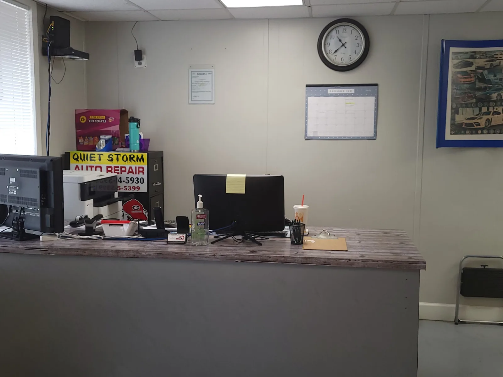
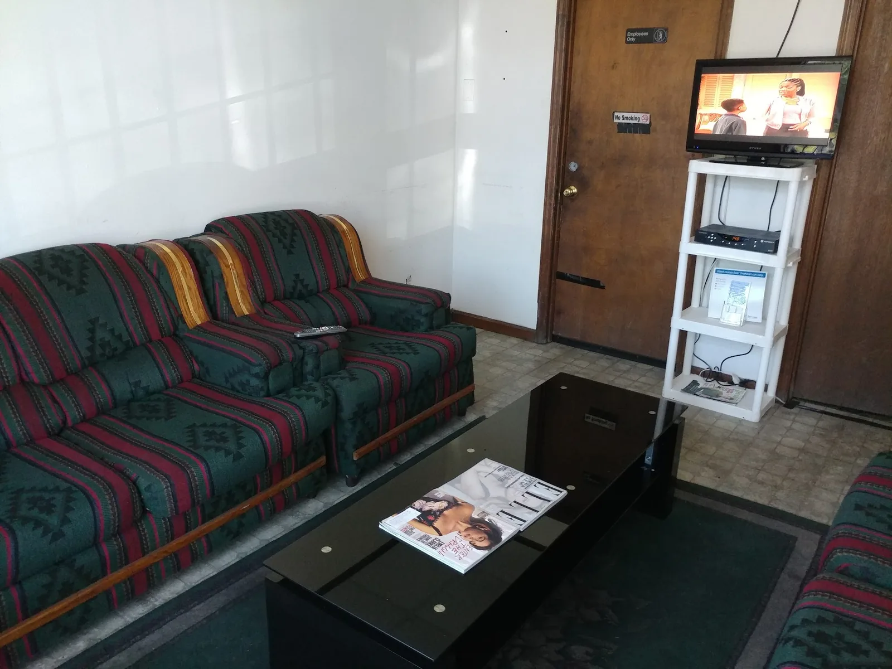
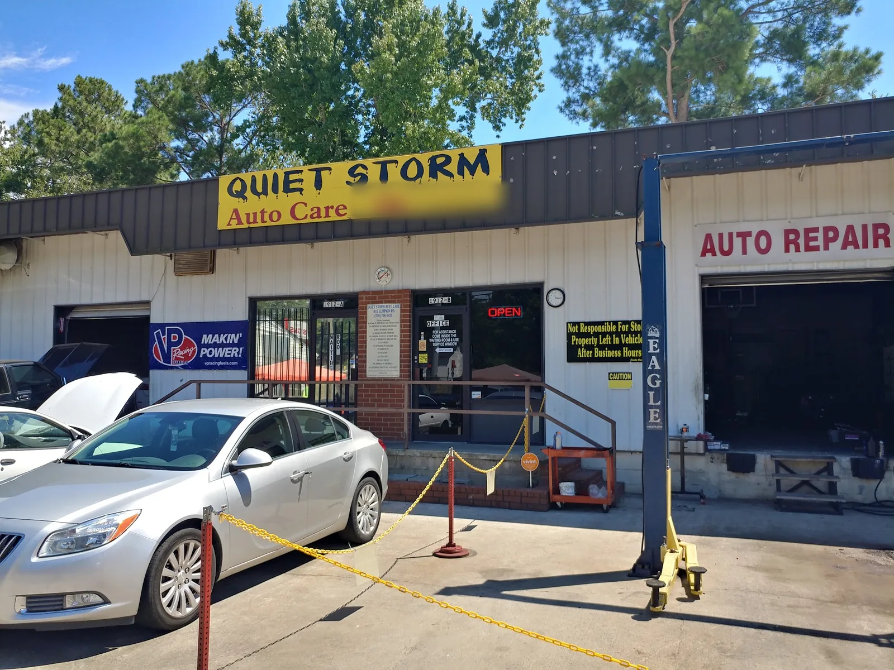

About
Built on hard work and respect.
A Black-owned auto repair shop on Washington Rd, known for honesty, fair prices and a waiting room customers actually like.
In their own words
“We work to satisfy you.”
“QSAC is a company that is built on hard work, respect, intelligence, and first-hand professional knowledge. We put our customers needs and concerns first at all times, and from there we explain our line of work. The best part is that Quiet Storm Auto Care have affordable Prices and Sales, so come visit at any time. Thank you and remember we work to satisfy you!!!”
Customers keep coming back to the same things: they explain the work, the estimate holds and the shop is spotless. One reviewer drives two hours to come back. Another says the shop is “set back off the street and is unlike any auto repair shop i’ve seen.”


Good to know
Details from their listing.
- Black-owned businessGoogle listing
- Wheelchair-accessible entrance & parkingGoogle listing
- Appointment requiredGoogle listing
- Credit, debit & tap-to-pay (NFC)Google listing
- Onsite services · oil changeGoogle listing
- Pickup & delivery within 5 miles, if requestedFrom their original site

Where it started
Before Washington Rd.
Their original website gave the shop’s address as 1912 Lumpkin Rd, Augusta. Today you’ll find Quiet Storm at 2631 Washington Rd, under the blue awning with the red door.
That old site listed “body repair work, mechanical auto repair, car wash”, along with discounts for teachers, the military and senior citizens. From their original site
Get directionsGallery
The shop & the work.
The shop photos are from their Google listing. The body-work photos are from their original site (2009).
Book your appointment
Come see the calm for yourself.
2631 Washington Rd, Augusta. Appointment required.
Mon–Thu 9 AM–6 PM ET · by appointment